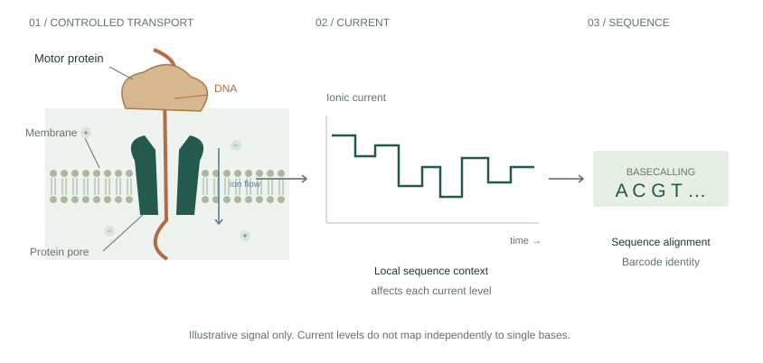
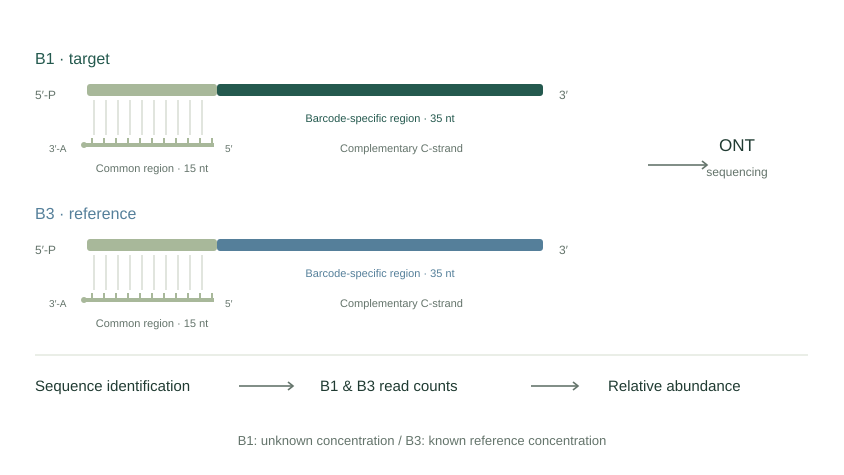
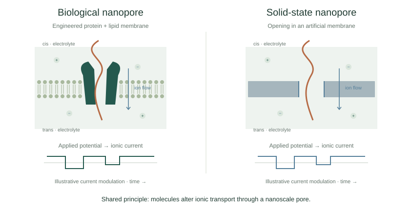

RESEARCH DIRECTION 01 / IMPERIAL COLLEGE LONDON
Reference-Based DNA Barcode Quantification
Improving the accuracy, precision and reliability of DNA concentration measurements through sequence-distinguishable target and reference barcodes.
01 / Reference-Based DNA Barcode Quantification
Scientific background
Measuring molecular abundance through sequence-based readout.
ONT sequencing provides molecular identity and read counts. My current synthetic DNA work asks how distinguishable target and reference barcodes can support concentration measurements that are accurate, precise and reproducible. Quantitative performance depends on how molecules reach the pore, generate usable reads and receive a sequence assignment.
This direction is independent of enzyme-mediated RNA detection. Both investigate quantitative molecular sensing, and each requires calibration appropriate to its own workflow.
02 / Reference-Based DNA Barcode Quantification
ONT sequencing principles
ONT sequencing couples controlled nucleic-acid movement to electrical measurement.
An engineered protein pore sits within a membrane under an applied potential. A motor protein regulates DNA movement so that the electrical signal can be recorded as the strand passes through the sensing region.
Current depends on the local nucleotide context occupying the pore. Basecalling models interpret that signal as a nucleotide sequence. Matching the read to a known sequence library then allows DNA barcodes to identify distinguishable molecular reporters. [1]

Sequence as an identifier
A barcode is a chosen DNA sequence. A recognition probe can associate a particular target with that sequence, allowing chemically different targets to share a nucleic-acid readout. [4]
Identity is not abundance
A correct sequence assignment tells us which reporter was read. Inferring the original target amount also requires suitable controls, calibration and an understanding of the conversion and detection steps.
03 / Reference-Based DNA Barcode Quantification
DNA barcode design
B1 is the target barcode. B3 is an internal reference at a known concentration.
The supplied B1/B3 designs share a common region and contain different barcode-specific sequences. Classification against those distinguishable sequences assigns reads to B1 or B3, enabling separate counting. A complementary C-strand pairs antiparallel to the common region.

04 / Reference-Based DNA Barcode Quantification
Reference-based measurement
How can internal reference barcodes improve the accuracy, precision and reliability of DNA concentration estimates?
B1 and B3 can already be identified and counted through sequence-based readout. The research question concerns the reliability of the concentration estimate obtained from those counts. An internal reference of known concentration supports a relative measurement, subject to calibration.
REFERENCE NORMALISATION
R = NB1 / NB3
CB1 = (R / α) × CB3
N denotes classified read counts, C denotes concentration, and α is the relative detection response factor established through calibration. The expression assumes a calibrated proportional response over the range in which it is applied.
What a reference can help with
Comparing counts within the same sequencing workflow may reduce the effect of shared changes in overall sequencing output. The ratio connects relative barcode abundance to a known reference.
What calibration must address
Capture, sequence context, preparation, recovery and classification can affect B1 and B3 differently. Reference normalisation does not automatically remove those effects. Reliable estimation requires controls, repeat measurements and independent validation.
05 / Reference-Based DNA Barcode Quantification
Quantitative measurement challenges
A reference can reduce some shared variation while leaving differential responses and uncertainty.
Sequencing output and response
Sequencing duration, active pores and sample preparation affect total output. B1 and B3 may also differ in capture, recovery, sequence context or usable-read generation. A ratio does not automatically cancel barcode-specific effects.
Sequence classification
Read quality, sequence coverage and classification criteria determine which reads enter each count. More accepted reads need not mean a more accurate concentration estimate if incorrect assignments also increase.
Counting uncertainty
Finite counts introduce sampling uncertainty in both numerator and denominator. Sparse target counts limit precision, while sparse reference counts can destabilise the ratio. This uncertainty is distinct from systematic bias.
Calibration and reproducibility
Known standards, blanks, single-barcode controls and independent repeats help assess response factors, background and consistency. Accuracy concerns closeness to the known value; precision concerns repeated-measurement spread. Reproducibility tests whether results remain consistent across independent measurements.
06 / Reference-Based DNA Barcode Quantification
Research questions
The emphasis is on measurement reliability rather than a claim that abundance counting is new.
- When does internal reference normalisation improve accuracy or precision, and when does it introduce additional variability?
- How do barcode sequence design, capture and classification affect relative detection response?
- What controls and calibration support reproducible concentration estimates for low-abundance DNA?
07 / Reference-Based DNA Barcode Quantification
Nanopore sensing context
Two pore architectures share an electrical sensing principle.
An applied potential drives ions through the pore. When a molecule enters, passes through or interacts with the opening, it changes ionic transport. The resulting current modulation provides a way to observe individual molecular events.
Biological pores use a protein channel in a membrane. Solid-state pores use an opening in an artificial solid membrane. Their shared electrical foundation supports different approaches to identification, quantitative sensing and biomedical research. [1] [2]

SOURCES & ATTRIBUTION
Sources and research context
The B1/B3 design and quantitative research questions follow Yihan Li’s supplied MSci project presentation. Enzyme-mediated RNA detection is a separate, parallel research direction.
Supplied presentation sources
Yihan Li, Nanopore-Based DNA Barcode Quantification Towards Early Disease Detection, MSci project presentation, Imperial College London (2026).
Minghui Qi, Multiplexed and Multimodal Liquid Biopsy for Early-Stage Disease (Cancer) Detection Using the Oxford Nanopore Platform, viva presentation, Imperial College London (2026), supervisor Joshua Edel. Broader group concepts and proposals are not attributed as Yihan Li’s individual experimental contributions.
- Wang et al. · Nanopore sequencing technology, bioinformatics and applications ↗
Nature Biotechnology 39, 1348–1365 (2021). Biological nanopore sequencing and interpretation of electrical signals.
- Xue et al. · Solid-state nanopore sensors ↗
Nature Reviews Materials 5, 931–951 (2020). Solid-state sensing principles, device design and limitations.
- Koch et al. · Nanopore sequencing of DNA-barcoded probes for highly multiplexed detection of microRNA, proteins and small biomarkers ↗
Nature Nanotechnology 18, 1483–1491 (2023). Published recognition-probe and barcode context; no performance results are reproduced here.
All scientific schematics are original conceptual illustrations. No unpublished experimental data or numerical performance results are reproduced.